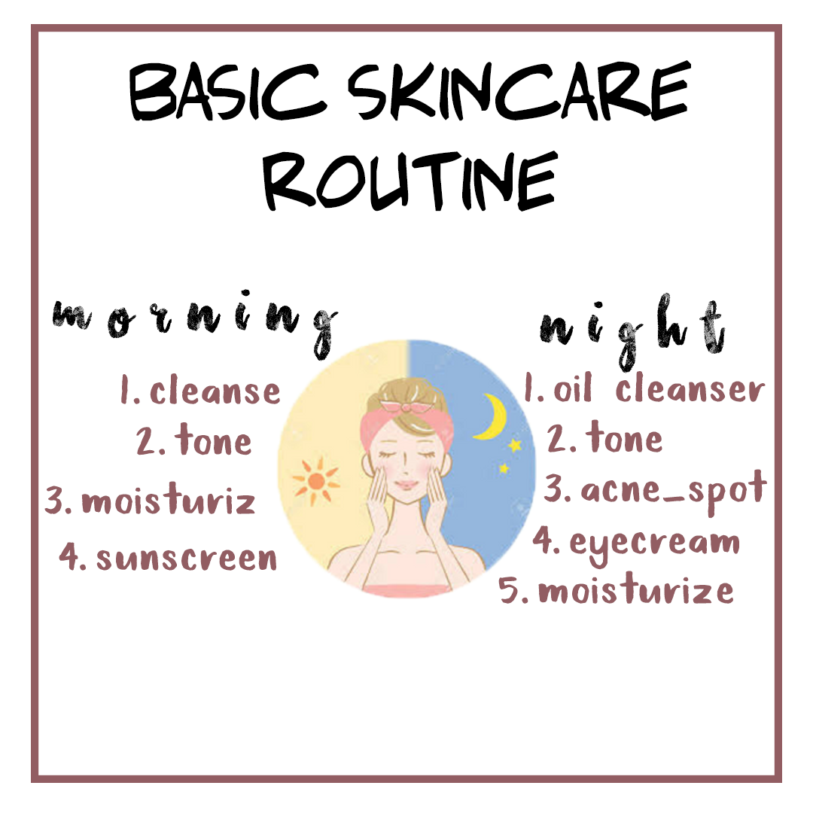

❮
❯
SKINCARE ROUTINE | DAILY

First of all, you need to know your skin type.How to know your skin type? => Know your skin type here.
You also can read why we need to apply those thing. => Know why our skin need a routine.
If you are oily, you have oily skin.
If you feel dry / tight, you have dry skin.
If the t-zone is greasy, the other is dry / normal, you have a combination skin.
If you feel normal, you have normal skin.
1.Oil-based cleanser
For the evening, select an oil based cleanser to start with as this will work to remove oil- based makeup and impurities from the skin.
2.Tone
To tone or not to tone? It’s a personal preference but we like to sweep a soaked cotton pad across skin to help remove excess oils and dead skin cells (and to keep our skin feeling happy!). It’s great to help pep up and refresh skin especially if yours includes ingredients like Witch Hazel (to help tighten pores) and calming Chamomile. Running short on time? Save this step for the evening to remove any last traces of make-up at the end of the day.
3.Acne Spot
Spot treatments were created to do just that — treat a specific blemish or area of the skin. There are a variety of spot treatments that can be effective, depending on the type of pimple and your skin type. While a spot treatment can be a very regular part of an acne-focused skincare regimen, there are some specific occasions where it can be especially useful.
4.Eyecream
Eye creams are specifically formulated to be used in the eye area, making them safer and more beneficial. ... Preventing signs of aging starts with using eye cream on the delicate skin around the eyes. Preventing Later (or Further) Damage. One of the first signs of aging is puffiness, sagging and wrinkles around the eyes.
5.Moisturize
A moisturiser - you guessed it - will help protect your skin from losing moisture (keeping it feeling supple and plump!). A not-so-great moisturiser? Will likely leave skin still feeling tight and dry, and breakouts can happen as your skin tries to adjust. Look out for ingredients like Vitamin E, Glycerin, Pro-Vitamin B5, and Borage Seed Oil, which are all great moisturisers for your skin. We like to warm up our moisturiser between palms before applying – it smooths on a treat!